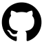
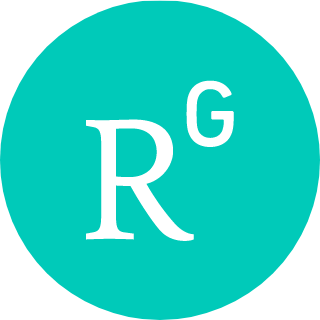
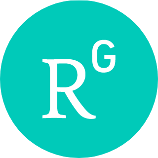

(english version)
(deutsche Version)
من در حال حاضر محقق پسادکتری در دانشگاه گرایفسوالد (Universität Greifswald)، در گروه تحقیقاتی کنراد والدورف (Konrad Waldorf) و ماتیاس لودوویک (Matthias Ludewig)، و محقق ریاضی در تورینگ هستم. برای اطلاعات بیشتر می توانید به لینک های زیر مراجعه کنید:
رزومه
 گیتهاب
 آرکایو
آرکایو
 گوگل اسکالر
لینکدین
گوگل اسکالر
لینکدین
 اورکید
 ریسرچگیت
ایکس
بلواسکای
ماستودون
اورکید
 ریسرچگیت
ایکس
بلواسکای
ماستودون
 یوتیوب
یوتیوب
اگر میخواهید با من در ارتباط باشید، میتوانید راه های زیر را امتحان کنید:
من عمدتاً روی نظریه هوموتوپی، نظریه رسته ها و فرمالسازی ریاضیات کار میکنم. اگر به پژوهش در این زمینه ها علاقهمند هستید و میخواهید اطلاعات بیشتری کسب کنید، خوشحال میشوم با من تماس بگیرید.
برای اطلاعات بیشتر راجع به حوزه پژوهشی و سوابق علمی من، لطفاً به نسخه انگلیسی یا نسخه آلمانی این وبسایت مراجعه کنید.